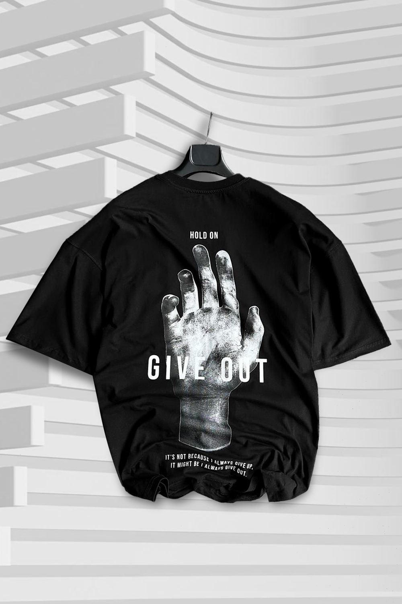
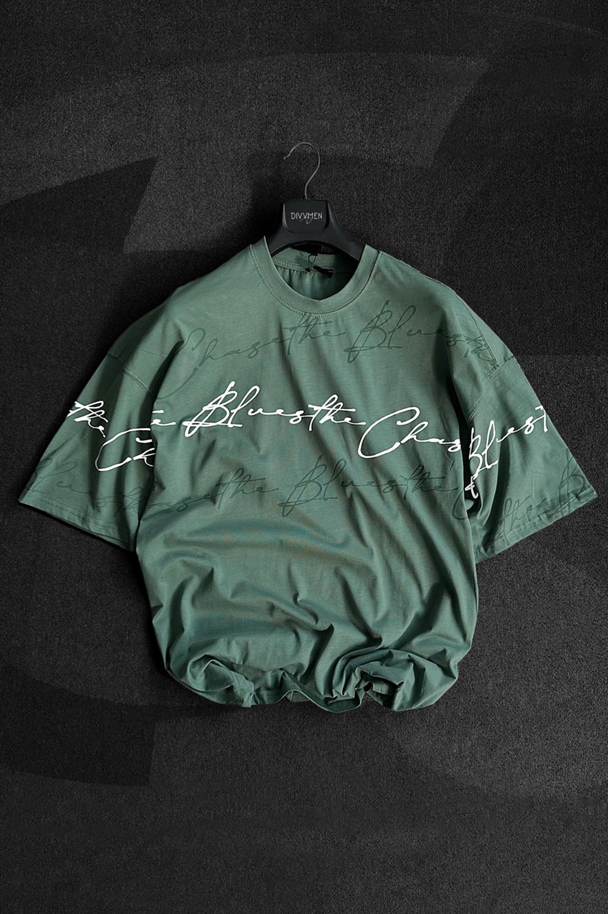
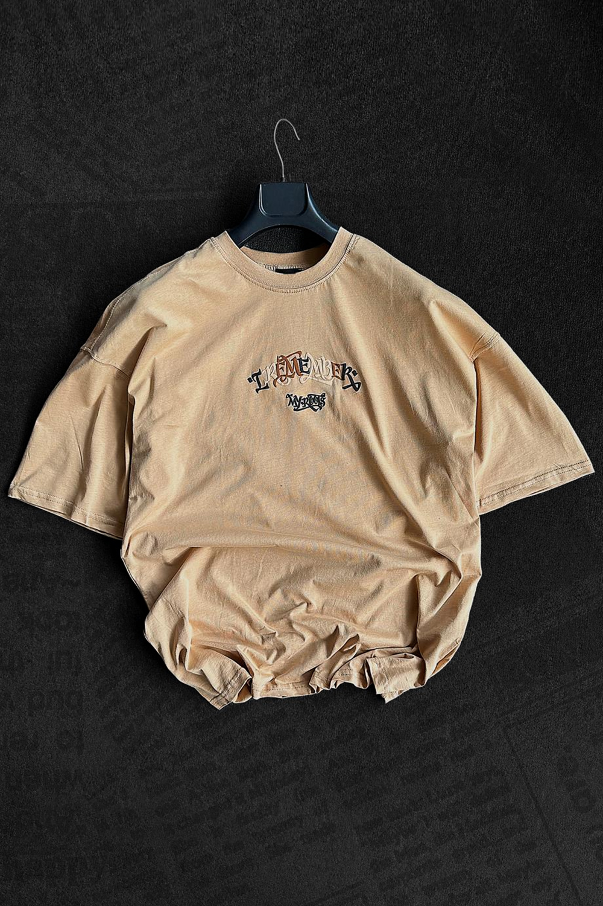
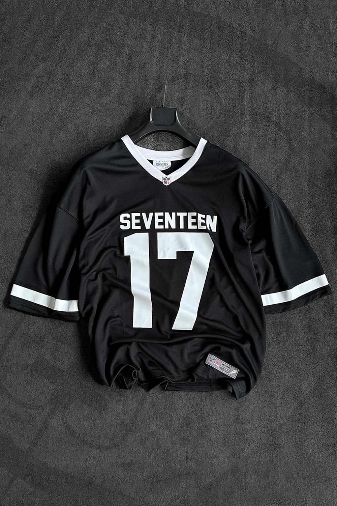
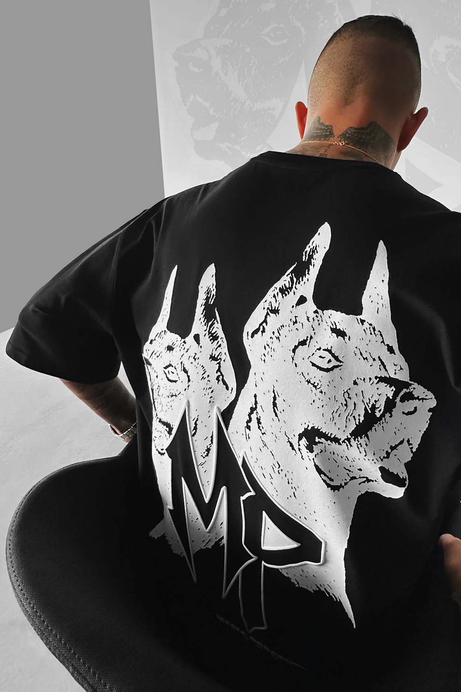

1/ 5

غُوندِيڨيان
عندما شعر الملاك كلارينس بأنّه حان الوقت ليتدخل وينقذ حياة الشاب جورج، أعطاه القدرة
ليرى الخير الذي قدّمه للناس في حياته، هذه قصة فيلم "It's a wonderful life"
غُوندِيڨيان أخذ من هذه الحكاية تفاصيلها الروحية الدافئة ونسج منها تصميمه الأيقوني المثير.
2 / 5

تشآبدِيڨـآل
ولادة الإبداع من رحم المعاناة، إنها موسيقى الجاز النابضة بالحياة تحولت
من رحلة شاقة وقاسية إلى ألحان روحية تجاوزت حدود الزمان والمكان
تشآبدِيڨآل استوحى من جمال موسيقى الجاز مقطوعته الخاصة، وعبّر عنها بتصميم متفرد ينبض بروح الشباب العصرية.
3 / 5

إِيميْدِاڤ
عندما أراد المغني الشهير “ماولي” التحدث عن تجاربه القاسية والأشخاص
الذين أحدثوا أثراً مهماً في حياته، ألّف أغنيته المؤثرة "remember your roots"
أشعل إِيميْدِاڤ من حروف ماولي المذهبة شعلة أفكاره، ونسج منها تصميم مثير مرتبط بجذور الأناقة العصرية.
4 / 5

سيڤيْدِيڤ
في لحظة تاريخية فُتحت أبواب الحظ أمام فيليب ريفرز، عندما احتضن
كابتن فريق الريكبي NFL موهبته الجنونية، وحوله إلى لاعب محترف
سافرت روح الحظ والتحدي إلى سيڤيْدِيڤ وأعادت هذه اللحظة بتصميم بسيط يعكس إيقاع الحياة الرياضية.
5/ 5

مآنْدِيڨي
في الوقت الذي اعتقد فيه الجميع بأن الإنسان الكائن الوحيد الذي تغمره مشاعر الاشتياق، غيّر الكلب الياباني هاتشيكو هذه النظرة البالية
عندما انتظر صاحبه المهاجر تسع سنوات في محطة القطار
مآنْدِيڨي خلّد قصة مشاعر هاتشيكو الأسطورية، وطبعها على تصميم ساحر يمزج الأحاسيس بروح الأناقة العصرية.
❮
❯